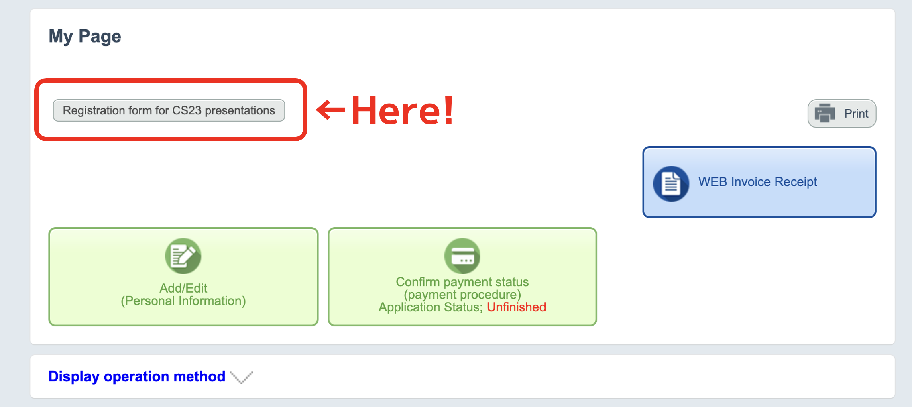

15 – 19 June 2026, TOC Ariake, Tokyo Bay Area, Japan
The "Cambridge Workshops on Cool Stars, Stellar Systems and the Sun" are held biennially and have evolved to be the premier conference series for cool star research.
Registration
Registration is now open. Registration fees are listed below. You can register via the conference registration portal.
- Early-bird registration: JPY 50,000 for students and JPY 70,000 for others (ends April 9, 24:00 UTC)
- Normal registration: JPY 80,000 (ends May 7, 24:00 UTC)
- Late registration: JPY 100,000 (ends June 19)
- Remote participant registration: JPY 20,000 (ends June 19)
- Our facilities can support about 600+ attendees. Based on the previous Cool Stars meetings, we expect that every interested astronomer should have a chance to join, but the only guarantee is to register early. Subscribe to our mailing list to receive updates.
- If the presenting author of a poster or talk does not pay the registration fee by the deadline of the normal registration fee (May 7), the poster / talk will be removed.
Registration and Payment Deadlines
- January 31, 2026: deadline for financial support applications
- April 9, 2026: early-bird registration closes (24:00 UTC)
- May 7, 2026: payment deadline for oral/poster presenters
- May 7, 2026: normal registration closes (24:00 UTC)
- June 19, 2026: late registration closes
- June 19, 2026: remote participant registration closes
Financial support
Limited financial support is available to allow students and other early career astronomers to attend CS23, if their institution cannot provide sufficient funds. Instructions to apply for travel grants can be found at the registration portal. The deadline to submit the financial support application is January 31, 2026.
Childcare Information
We are planning to provide on-site childcare near the conference venue.
Childcare registration will be available through the registration portal. The application deadline is April 13 (Mon), 23:59:59 UTC. If you are considering using the childcare service but your plans are not yet confirmed, please register for childcare through the registration system and inform us by email (coolstars23-childcare@googlegroups.com) about the possibility of cancellation and when your plans are expected to be finalized.
The childcare fee is planned to be 5,000 JPY per child for a half day and 10,000 JPY per child for a full day. Please note that these fees may change depending on the number of applications.
For inquiries, please contact the
childcare team
.
Registration FAQ
-
Where can I submit my abstract for a plenary talk or a poster?
A. To access the abstract submission form, please create an account on the
registration portal.
After logging in, go to your personal page and click the
“Registration form for CS23 presentations” button shown in the image below.

-
I would like to clarify whether it is necessary to fill out two separate forms if I wish to be considered for both a plenary talk and a poster, or if a single submission is sufficient.
If you plan to give a presentation on a single topic, and if you selected "Yes" for the question
"If your request for an oral talk is rejected, would you prefer to have a poster instead?" at the submission page, you do not have to submit your abstract twice.
-
When will the selected plenary talks be announced?
We plan to announce the finalized oral talks by the end of March.
-
Is it okay to submit a similar abstract to a splinter session before the plenary selection results are known?
Yes, you may submit an abstract separately to a splinter session. However, to maintain the one-oral-talk-per-person policy, both submissions will not be selected as oral talks.
-
If an abstract submitted to a plenary session does not secure an oral slot, is it automatically passed to a relevant splinter session?
No, you need to submit an abstract separately via the website of each splinter session where you would like to give a presentation.
-
If I apply for travel grant support, do I have to pay the registration fee by January 31?
No, but please complete the payment by the early-bird deadline (April 9). We plan to announce the first round of the financial support recipients in March. We will refund the registration fee and part of the accommodation fee if you secure travel support. The announcement of the second+ round may be later than that, depending on the condition of external grants the LOC team is applying for. If you need to cancel the registration, 100%(50%) of the registration fee will be refunded before April 10 (May 8).
-
How much is the cancellation fee?
It is shown on the registration portal.
-
If I book accommodation through the registration portal, is it possible to extend my stay before or after the conference period?
Yes, please contact the travel agency (JTB) in charge of the conference: sagamihara_sales02@jtb.com.
-
How to complete my payment?
Please follow the second page of the visual instruction.
-
How to cancel my participation?
Login to the registration system, go to 'My Page'. Then, press the 'Cancel' or 'Cancel all reservation' button. Here is a visual instruction. Do not forget cancel your accommodation as well. Your payment will be refunded. If you submit presentations, please contact LOC or splinter session organizer.